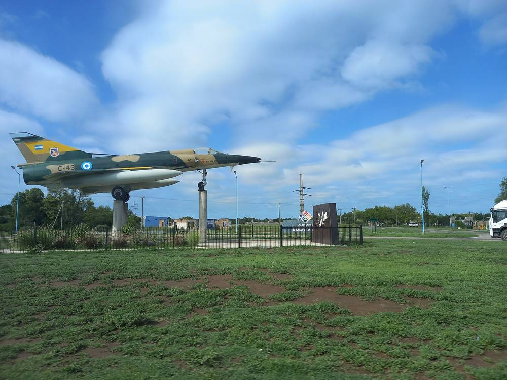

아르헨티나 라스이게라스 전력협동조합, 시립 태양광 발전소 사들여 11월 6일 넘겨받는다…조합원 총회 만장일치

땅 1만329.50㎡·패널 315장·인버터 5대 인수…직원 기술 교육 시범 기지 삼아 더 큰 발전소 구상
아르헨티나 코르도바주 라스이게라스의 전기·공공서비스 협동조합(Cooperativa de Electricidad, Obras y Servicios Públicos de Las Higueras)이 시립 태양광 발전소를 사들여 11월 6일 오전 11시 발전소 부지에서 공식적으로 넘겨받는다. 매입은 지난 10월 15일 열린 임시총회에서 조합원 만장일치로 승인됐다. 조합이 인수하는 설비는 1만329.50㎡의 땅과 태양광 패널 315장, 인버터 5대, 부대 기술 장비다. 조합은 이 발전소를 직원들의 기술 교육을 위한 시범 기지로 쓰고, 앞으로 마을에 더 큰 규모의 태양광 발전소를 짓는 계획의 바탕으로 삼을 방침이며, 매입 가격과 발전 용량은 공개되지 않았다.
시민에너지 관점
독일 남부 슈바르츠발트의 작은 도시 쇠나우에서는 1990년대 주민들이 주민투표를 거쳐 스스로 회사를 세우고 마을 전력망을 사들였고, 그 회사는 지금도 시민이 소유한 전력회사로 남아 있다. 작은 협동조합이 발전소를 제대로 운영할 수 있겠느냐는 우려가 있지만, 라스이게라스처럼 작은 설비부터 넘겨받아 직원 교육의 현장으로 삼으면 기술과 경험이 지역 안에 쌓이고 다음 사업의 규모를 키울 힘이 된다. 공공이 지은 발전소가 조합원 총회의 결정으로 주민 소유가 되면 그 수익과 운영 판단도 주민 곁에 남는다. 국내 지자체가 운영하는 공공시설 태양광도 주민 협동조합이 인수하거나 운영을 맡을 수 있는 길을 열어야 한다.
출처: Córdoba Interior Informa 2026-11-03 표기 없음 원문 보기
アルゼンチン・ラス・イゲラスの電力協同組合、市営太陽光発電所を買い取り11月6日に引き継ぐ…組合員総会が全会一致
敷地1万329.50㎡・パネル315枚・インバーター5台を取得…職員の技術研修の試験拠点とし、より大きな発電所を構想
アルゼンチン・コルドバ州ラス・イゲラスの電気・公共サービス協同組合（Cooperativa de Electricidad, Obras y Servicios Públicos de Las Higueras）が市営太陽光発電所を買い取り、11月6日午前11時に発電所の敷地で正式に引き継ぐ。買い取りは10月15日に開かれた臨時総会で組合員の全会一致により承認された。組合が取得する設備は、1万329.50㎡の土地と太陽光パネル315枚、インバーター5台、付帯する技術設備だ。組合はこの発電所を職員の技術研修のための試験拠点として使い、将来、町にさらに大規模な太陽光発電所を建てる計画の土台にする方針で、買い取り価格と発電容量は公表されていない。
市民エネルギーの視点
ドイツ南部シュヴァルツヴァルトの小さな町シェーナウでは、1990年代に住民が住民投票を経て自ら会社を立ち上げ町の送配電網を買い取り、その会社は今も市民が所有する電力会社として続いている。小さな協同組合が発電所をきちんと運営できるのかという懸念はあるが、ラス・イゲラスのように小さな設備から引き継いで職員研修の現場にすれば、技術と経験が地域の中に蓄積され、次の事業の規模を広げる力になる。公共が建てた発電所が組合員総会の決定で住民の所有になれば、その収益も運営の判断も住民のそばに残る。韓国の自治体が運営する公共施設の太陽光も、住民協同組合が引き継いだり運営を担ったりできる道を開くべきだ。
出典: Córdoba Interior Informa（コルドバ・インテリオール・インフォルマ） 2026-11-03 記者名なし 原文を読む
阿根廷拉斯伊格拉斯电力合作社收购市属光伏电站，11月6日正式接手…社员大会一致通过
接收1万329.50平方米土地、315块光伏板和5台逆变器…作为员工技术培训的试点基地，筹划建设更大电站
阿根廷科尔多瓦省拉斯伊格拉斯的电力与公共服务合作社（Cooperativa de Electricidad, Obras y Servicios Públicos de Las Higueras）收购了市属光伏电站，将于11月6日上午11时在电站现场正式接手。这项收购已在10月15日召开的临时社员大会上获得社员一致批准。合作社接收的设施包括1万329.50平方米的土地、315块光伏板、5台逆变器以及配套技术设备。合作社计划把这座电站用作员工技术培训的试点基地，并以此为基础规划将来在当地建设规模更大的光伏电站，收购价格和装机容量没有公开。
市民能源视角
在德国南部黑森林的小镇舍瑙，居民于1990年代经过居民投票自行成立公司、买下镇上的电网，这家公司至今仍是由市民拥有的电力公司。有人担心小型合作社能否运营好电站，但像拉斯伊格拉斯这样从小型设施接手、把它当作员工培训的现场，技术和经验就会在本地积累，成为扩大下一个项目规模的力量。公共部门建设的电站经社员大会决定转为居民所有后，收益和经营决策也都留在居民身边。韩国地方政府运营的公共设施光伏，也应开辟由居民合作社接手或承担运营的途径。
来源: Córdoba Interior Informa（科尔多瓦内地资讯） 2026-11-03 未署名 查看原文
Las Higueras electricity co-op in Argentina buys municipal solar park and takes over on November 6 after unanimous member vote
Purchase covers 10,329.50 square metres of land, 315 panels and five inverters; the park will serve as a pilot base for staff training and a stepping stone to a larger plant
The electricity and public services cooperative of Las Higueras in Argentina's Córdoba province (Cooperativa de Electricidad, Obras y Servicios Públicos de Las Higueras) has bought the town's municipal solar park and will formally take possession of it at the site at 11 a.m. on November 6. Members unanimously approved the purchase at an extraordinary general assembly held on October 15. The assets acquired by the co-op are a 10,329.50-square-metre plot, 315 solar panels, five inverters and supporting technical equipment. The co-op plans to use the park as a pilot base for training its staff and as the foundation for a future larger solar plant in the town; the purchase price and generating capacity have not been disclosed.
Citizen Energy View
In Schönau, a small town in Germany's Black Forest, residents went through local referendums in the 1990s, set up their own company and bought the town's power grid, and that company remains a citizen-owned utility today. There are doubts about whether a small cooperative can run a power plant properly, but taking over a small installation first and using it as a training ground for staff, as Las Higueras is doing, builds skills and experience within the community and gives it the strength to scale up the next project. When a plant built by the public sector passes into residents' ownership by decision of a members' assembly, its income and operating decisions stay close to the people it serves. In Korea, too, solar installations on public facilities run by local governments should be open to takeover or operation by residents' cooperatives.
Source: Córdoba Interior Informa 2026-11-03 No byline Read the original